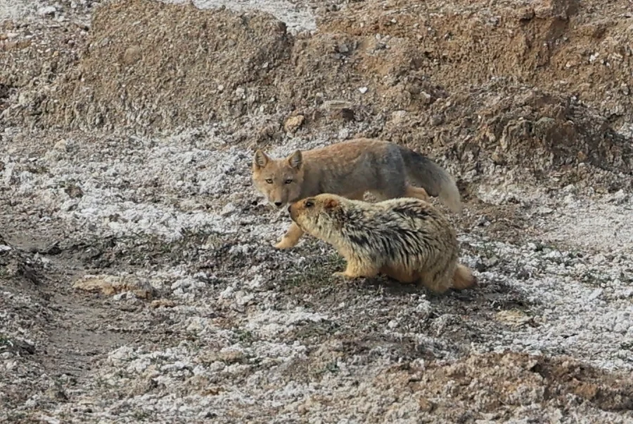

哺乳动物 · 动物界
藏狐 Vulpes ferrilata

青藏高原特有的狐类，方脸、短耳与蓬松冬毛极具辨识度，是高原鼠兔最主要的捕食者之一。
- 分类
- 门脊索动物门纲哺乳纲目食肉目科犬科属狐属
- 栖息环境
- 海拔 3000–5000 米的高寒草甸、草原与荒漠边缘
- 地理分布
- 中国青藏高原及周边地区，包括西藏、青海、四川西部、甘肃和新疆南部
- 保护级别
- IUCN 无危（LC）；中国国家二级保护动物
物种志
藏狐体长约 60–70 cm，尾长约 25–35 cm，体重 4–6 kg。它的吻部较长、脸颊宽方，耳朵短小而圆，冬季毛被厚密，呈沙黄或灰褐色，与高寒草甸的枯草色调十分接近。与赤狐相比，藏狐的四肢较短，身体更显敦实，适合在海拔 3000–5000 米的开阔高原上活动。
藏狐主要栖息于青藏高原的高寒草甸、草原和荒漠边缘，常单独或成对活动，昼间捕猎。它的食物以高原鼠兔为主，也捕食田鼠、旱獭幼崽、鸟类和昆虫；鼠兔种群数量直接影响藏狐的分布与繁殖。每年 2–3 月交配，妊娠期约 50–60 天，每胎 2–5 仔，幼狐在夏季跟随父母学习捕猎。藏狐对控制鼠兔数量、维持高原草甸生态平衡具有重要作用。
形态与习性
- 体长60–70 cm，尾长 25–35 cm
- 体重4–6 kg
- 食性以高原鼠兔为主，兼食田鼠、鸟类和昆虫
- 活动节律多在昼间活动，单独或成对出现
- 繁殖2–3 月交配，每胎 2–5 仔
- 寿命野外约 8–10 年
趣味知识
- 藏狐的“方脸”来自宽大的颊部和较长的吻部，是它最容易被认出的特征。
- 它非常依赖高原鼠兔，鼠兔数量的周期变化会影响藏狐的繁殖成功率。
- 藏狐的冬毛比夏毛更厚、更浅，有助于在雪地中保温与伪装。